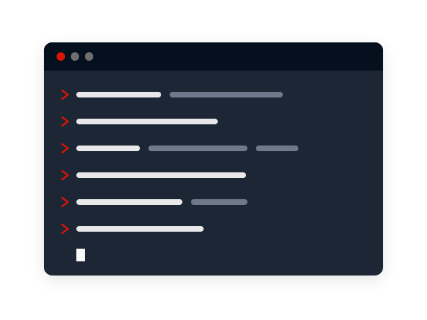
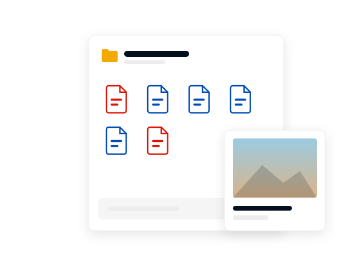

Requirements
Mega desktop app system requirements for Windows, macOS and Linux
The Mega desktop app system requirements are short: Windows 10, macOS 10.15 Catalina or one of five officially supported Linux distributions. Mega's README gives operating system minimums only.
On this page
The Mega desktop app system requirements are Windows 10 or later, Windows Server 2019 or later, macOS 10.15 Catalina or later, or Linux. On Linux, Mega officially supports Debian, Ubuntu, Mint, Fedora and CentOS and offers prebuilt packages for other distributions. Mega's README states no processor, memory or disk space figures.
This is an independent guide, not Mega's website. Buttons lead to the official Mega site and may be affiliate links; if they are, the price you pay does not change. Facts were checked on 6 November 2026 against Mega's public GitHub repositories and its App Store listing.
Windows
Windows 10 is the minimum for desktop systems, so Windows 11 is covered and Windows 7, 8 and 8.1 are not. For servers the minimum is Windows Server 2019.
If you run an older Windows version, the current installer is not meant for it. The sources read here do not mention legacy builds for older systems.
macOS
The minimum is macOS 10.15 Catalina. The README does not list processor types, so it does not say anything specific about Intel or Apple silicon Macs.
Mega tags a separate macOS build for each release, and the current one is 6.7.0.3 from 26 October 2026. The latest version page lists what each build changed.
Linux
Mega names two families as officially supported: Debian based systems, which are Debian, Ubuntu and Mint, and Red Hat based systems, which are Fedora and CentOS. For other distributions, the README says prebuilt packages are available and listed on Mega's download page.
The README does not give minimum release numbers for each distribution; the download page shows which releases have a package. Release 6.5.0 improved Wayland support, which is relevant if your desktop session no longer uses X11. When you are ready, the download page explains how to pick the right package.

What Mega does not state
The README gives no minimum processor, no memory figure and no disk space figure, and neither it nor the release notes state the installer size. This handbook does not fill those gaps with estimates.
Plan your disk space around your data instead. A two way sync keeps a full local copy of every synced folder, so the local drive needs at least as much free space as the cloud folders you choose to sync. The review explains the sync model and its risks.
Other Mega clients
Mega also publishes MEGAcmd, a terminal client for Linux, macOS and Windows, with packages for QNAP and Synology NAS systems. Its guide notes that mounting cloud folders through FUSE works on Linux and Windows but not on macOS. The MEGAcmd backup guide shows how to use it for scheduled backups.
On phones, Mega's App Store listing states that the iPhone app requires iOS 17.0 or later. Requirements for the Android app were not read for this page.

Key facts
Windows
10 or later
Windows Server
2019 or later
macOS
10.15 Catalina or later
Linux
Debian, Ubuntu, Mint, Fedora, CentOS
CPU, RAM, disk
Not stated by Mega
Checked
2026-11-06
Requirements at a glance
The Mega desktop app system requirements below come from the README of Mega's public desktop app repository, read on 6 November 2026. They apply to the current release line.
| System | Minimum |
|---|---|
| Windows | Windows 10 |
| Windows Server | Windows Server 2019 |
| macOS | 10.15 Catalina |
| Linux, official support | Debian, Ubuntu, Mint, Fedora, CentOS |
| Linux, other distributions | Prebuilt packages listed on Mega's download page |
| Processor, memory, disk space | Not stated |
Frequently asked questions
Does the Mega desktop app work on Windows 11?
Yes. The stated minimum is Windows 10, and Windows 11 is newer than that minimum. Mega tags a Windows build for every release.
Does the Mega desktop app work on Windows 7?
No. Mega's README sets Windows 10 as the minimum, so Windows 7, 8 and 8.1 are below the supported line for the current release.
Which macOS version does Mega need?
macOS 10.15 Catalina or later. The README does not list processor requirements for Macs.
Which Linux distributions does Mega support?
Debian, Ubuntu, Mint, Fedora and CentOS are officially supported. Mega's README says prebuilt packages for other distributions are listed on its download page.
How much RAM does the Mega desktop app need?
Mega does not state a memory requirement in its README. Only operating system minimums are given.
Can I run Mega on a NAS?
Not the desktop app, but Mega's terminal client MEGAcmd has packages for QNAP and Synology systems, installed from the App Center and Package Center.